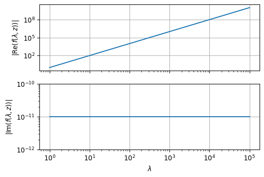
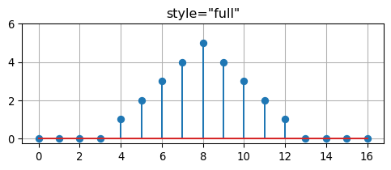
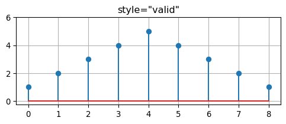

Show the code
def lambda_1(lam, sigma, mu, f):
omega = 2 * np.pi * f
mu0 = np.pi * 4e-7
alpha = np.sqrt(lam**2 + 1j * omega * mu * sigma)
return alpha / mu0This section covers the implementation of the numerical calculation of Hankel integrals typically encountered in dipole induction over a layered half-space.
As usual, we will restrict ourselves to the vertical magnetic dipole (VMD).
We will demonstrate the computational method using the vertical component \(B_z\) of the magnetic field as an example.
Finally, in Section 12.6 we will use our implementation to simulate a measurement with the helicopter EM system of the BGR Hannover.
We have obtained the following integrals for \(z \le 0\):
\[ \begin{align} E_\varphi & = -\frac{i \omega \mu m}{4 \pi} \left[ \frac{r}{R^3} + \int_0^\infty \frac{\lambda - \lambda_1}{\lambda + \lambda_1}\lambda e^{-\lambda h}e^{\lambda z}J_1(\lambda r)\, \dd\lambda \right] \\ B_r & = \frac{\mu_0 m}{4 \pi} \left[ \frac{3r(z+h)}{R^5} - \int_0^\infty \frac{\lambda - \lambda_1}{\lambda + \lambda_1}\lambda^2 e^{-\lambda h}e^{\lambda z}J_1(\lambda r)\, \dd\lambda \right] \\ B_z & = \frac{\mu_0 m}{4 \pi} \left[ \frac{3(z+h)^2 - R^2}{R^5} + \int_0^\infty \frac{\lambda - \lambda_1}{\lambda + \lambda_1}\lambda^2 e^{-\lambda h}e^{\lambda z}J_0(\lambda r)\, \dd\lambda \right] \end{align} \tag{11.1}\]
The first terms in the brackets of 11.1 describe the geometric damping of the source field in free space. These terms are trivial to calculate.
The contribution to the field components in \(z<0\) caused by induction in \(z>0\) is provided by the integral expressions in the brackets.
They have the general form \[ \begin{equation} g(r) = \int_0^\infty f(\lambda, z) J_\nu(\lambda r)\, \dd\lambda, \qquad \nu > -1 \end{equation} \] with \(\nu\) indicating the order of the Bessel function.
To evaluate, e.g., the component \(B_z\), one needs the function \(f(\lambda, z)\) as \[ f(\lambda, z) = \frac{\lambda - \lambda_1}{\lambda + \lambda_1}\lambda^2 e^{-\lambda h}e^{\lambda z} \]
As an example, we choose a uniform halfspace with
The surface admittance \(\lambda_1 = \sqrt{\lambda^2 + i \omega \mu_0 \sigma_1}\) will be calculated using the function lambda_1 given below.
This is the Python implementation of the admittance of the uniform halfspace, \(\lambda_1\):
def lambda_1(lam, sigma, mu, f):
omega = 2 * np.pi * f
mu0 = np.pi * 4e-7
alpha = np.sqrt(lam**2 + 1j * omega * mu * sigma)
return alpha / mu0Given these definitions, we are now able to evaluate the complete integrand functions in 11.1.
To this end, we first illustrate the integrand graphically:
nlam = 801
lam = np.logspace(0, 5, nlam, endpoint=True)
r = 100.0
freq = 100.0
sigma = 0.01
mu = np.pi * 4e-7
f = [(l - lambda_1(l, sigma, mu, freq)) / (l + lambda_1(l, sigma, mu, freq)) * l**2 for l in lam]
fig, (ax1, ax2) = plt.subplots(2, 1, sharex=True, figsize=(6,4))
ax1.loglog(lam, np.abs(np.real(f)))
ax1.set_ylabel(r'$| \mathrm{Re}(f(\lambda,z))|$')
ax1.grid(True)
ax2.loglog(lam, np.abs(np.imag(f)))
ax2.set_xlabel(r'$\lambda$')
ax2.set_ylabel(r'$| \mathrm{Im}(f(\lambda,z))|$')
ax2.set_ylim(1e-12, 1e-10)
ax2.grid(True)
As we see from the above illustration, the behaviour of \(f(\lambda,z)\) itself does not impose any numerical problems to the integration.
The following graphs show the real and imaginary part of the complete integrand:
from scipy.special import j0
fig, (ax1, ax2) = plt.subplots(2, 1, sharex=True, figsize=(6,4))
ax1.semilogx(lam, np.real(f) * j0(lam * r))
ax1.grid(True)
ax1.set_title(r'$\mathrm{Re}(f(\lambda)) J_0(\lambda r)$')
ax2.semilogx(lam, np.imag(f) * j0(lam * r))
ax2.grid(True)
ax2.set_title(r'$\mathrm{Im}(f(\lambda)) J_0(\lambda r)$')
ax2.set_xlabel(r'$\lambda$');We observe that the numerical integration will be a major challenge.
This is due to the following reasons:
In practice, the following three numerical techniques have proven effective:
In the following, we briefly outline the idea of the FHT.
Important work on this problem has been done by Ghosh (1971), Johansen & Sørensen (1979), Anderson (1982), Christensen (1990), among others.
The method is based on the following idea:
To cover the range of \(\lambda\) from \(0\) to \(\infty\) as quickly as possible, we take the following variable transformation:
\[\begin{equation} \begin{split} x & = \log(r/r_0) \\ y & = -\log(\lambda r_0), \qquad r_0 > 0 \\ G(x) & = r g(r) \\ F(y) & = f(\lambda) \\ H(x) & = e^x J_\nu(e^x) \end{split} \end{equation}\]
Then, the integral for computing \(g(r)\), i.e.,
\[\begin{equation} g(r) = \int_0^\infty f(\lambda, z) J_\nu(\lambda r)\, \dd\lambda, \qquad \nu > -1. \end{equation}\]
can be rewritten as a convolution integral, such that
\[\begin{equation} G(x) = \int_{-\infty}^\infty F(y) H(x - y) \dd y. \end{equation}\]
For discrete values of \(F\) with \(F_n := F(y_n)\) this integral becomes a discrete convolution
\[\begin{equation} G_m = \sum_{n=-\infty} ^\infty F_n H_{m-n} = \sum_{n=-\infty} ^\infty F_{m-n} H_{n} \end{equation}\]
In the publications given at the beginning of this section, it has been explained how to compute the optimal filter coefficients \(\overline H_n\) with finite length \(-\infty < n_1 \le n \le n_2 < \infty\).
There are two approaches to this:
Regardless of the choice of the method for determining the coefficients we have to implement
\[\begin{equation} G_m = \sum_{n=n_1} ^{n_2} F_n \overline H_{m-n} = \sum_{n=n_1} ^{n_2} F_{m-n} \overline H_{n} \end{equation}\]
using standard methods of discrete convolution.
We implement a Python function that computes the convolution:
def convolve(fc, kernel, style="valid"):
nc = len(fc)
nu = len(kernel)
n = nu + nc - 1
result = np.zeros(n, dtype=type(kernel))
for i in range(nc):
for j in range(nu):
result[j + i] += kernel[j] * fc[i]
if style == "full":
result = result
elif style == "valid":
result = result[nc - 1:n - nc + 1]
return resultWhen the keyword style="valid" is specified in the call to convolve, then the result of the convolution is restricted to the non-zero part of the result. Otherwise, when style="full" is provided, the result has leading and trailing zeros (zero padding).
We always use style="valid" as a default.
The following example confirms that our code is correct.
The convolution of two rectangular sequences results in a triangular sequence:
f = [0, 0, 0, 0, 1, 1, 1, 1, 1, 0, 0, 0, 0]
h = [1, 1, 1, 1, 1]
g = convolve(h, f)
print(f)
print(h)
print(g)[0, 0, 0, 0, 1, 1, 1, 1, 1, 0, 0, 0, 0]
[1, 1, 1, 1, 1]
[1 2 3 4 5 4 3 2 1]fig, ax = plt.subplots(1, 1, figsize=(6,2))
ax.stem(convolve(h, f, style="full"))
ax.set_title('style="full"')
ax.set_ylim((-0.25, 6.0))
ax.grid(True)
fig, ax = plt.subplots(1, 1, figsize=(6,2))
ax.stem(g)
ax.set_title('style="valid"')
ax.set_ylim((-0.25, 6.0))
ax.grid(True)
For the calculation of \(B_z\) we need the kernel \(F\) and the filter coefficients \(H\).
The filter coefficients are provided by the function gethankelfcJ0.
def gethankelfcJ0():
fc = np.array([
+2.898782880000e-07, +3.649351440000e-07, +4.594261260000e-07, +5.783832260000e-07,
+7.281413380000e-07, +9.166756390000e-07, +1.154026250000e-06, +1.452832980000e-06,
+1.829008340000e-06, +2.302585110000e-06, +2.898782860000e-06, +3.649351480000e-06,
+4.594261190000e-06, +5.783832360000e-06, +7.281413220000e-06, +9.166756640000e-06,
+1.154026210000e-05, +1.452833050000e-05, +1.829008240000e-05, +2.302585270000e-05,
+2.898782590000e-05, +3.649351860000e-05, +4.594260510000e-05, +5.783833290000e-05,
+7.281411440000e-05, +9.166758820000e-05, +1.154025730000e-04, +1.452833540000e-04,
+1.829006940000e-04, +2.302586300000e-04, +2.898778910000e-04, +3.649353620000e-04,
+4.594249600000e-04, +5.783834370000e-04, +7.281377380000e-04, +9.166748280000e-04,
+1.154014530000e-03, +1.452825610000e-03, +1.828968260000e-03, +2.302545350000e-03,
+2.898639790000e-03, +3.649167030000e-03, +4.593733080000e-03, +5.783032380000e-03,
+7.279414970000e-03, +9.163407050000e-03, +1.153256910000e-02, +1.451458320000e-02,
+1.826011990000e-02, +2.297010420000e-02, +2.887026190000e-02, +3.626918100000e-02,
+4.547940310000e-02, +5.694081920000e-02, +7.098730720000e-02, +8.809954260000e-02,
+1.082238890000e-01, +1.312504830000e-01, +1.550557150000e-01, +1.763715060000e-01,
+1.856277380000e-01, +1.697780440000e-01, +1.034052450000e-01, -3.025832330000e-02,
-2.275743930000e-01, -3.621732170000e-01, -2.055004460000e-01, +3.373948730000e-01,
+3.176898970000e-01, -5.137621600000e-01, +3.091302640000e-01, -1.267575920000e-01,
+4.619678900000e-02, -1.809686740000e-02, +8.354260500000e-03, -4.473683040000e-03,
+2.619747830000e-03, -1.601713570000e-03, +9.977178820000e-04, -6.262758150000e-04,
+3.943388180000e-04, -2.486063540000e-04, +1.568086040000e-04, -9.892662880000e-05,
+6.241523980000e-05, -3.938053930000e-05, +2.484723580000e-05, -1.567749450000e-05,
+9.891817410000e-06, -6.241311600000e-06, +3.938000580000e-06, -2.484710180000e-06,
+1.567746090000e-06, -9.891808960000e-07, +6.241309480000e-07, -3.938000050000e-07,
+2.484710050000e-07, -1.567746050000e-07, +9.891808880000e-08, -6.241309460000e-08
])
nc = 100
nc0 = 60
return fc, nc, nc0The function returns 100 filter coefficients.
Let’s have a closer look at the coefficients:
fc, nc, nc0 = gethankelfcJ0()
fig, ax = plt.subplots(1, 1, figsize=(6,4))
ax.plot(-nc0 + np.linspace(0, nc, num=nc), fc)
ax.grid(True)These are the filter coefficients which carry out the weighting of the functions \(J_\nu\) on the kernel \(f\).
We obtain the discrete values of \(F_n\) by evaluating the function \(f\) at given interpolation points.
The choice of these interpolation points depends on the source-receiver offsets \(r\) for which the integral is to be calculated. If the offsets \(r_i\) are also logarithmically equidistant, the convolution sum can use all values of \(r_i\) in one pass.
The kernel function \(F_n\) is calculated as a function of the length \(n_c\) of the filter coefficients \(H\) and the number \(n_r\) of distances \(r\).
The number of required function evaluations of \(f\) is \(n_c + n_r - 1\). The location of the discrete \(\lambda_n\) depends on the minimum spacing \(r_{min}\).
We set \(r=100\) m, such that \(n_r = 1\).
rmin = 100.0
nr = 1
ncnr = nc + nr - 1
rr = rminWe consider a homogeneous halfspace with conductivity \(\sigma = 0.01\) S/m.
Unlike our example, we usually provide logarithmically equidistant distances. Source and receiver points are both in the plane \(z=0\). The Euclidean distance between the two is denoted by \(R\).
The discrete distances \(r_i\) would then grow exponentially with 10 grid points per decade.
z = 0.0
z0 = 0.0
q = 10.0**0.1
R = np.sqrt(rr**2 + (z - z0)**2)We calculate the field values for several logarithmically equidistant frequencies at once. For our example we choose \(0.1 < f < 10^5\) Hz.
The next loop provides the discrete wavenumbers \(\lambda_n\) and from them the kernel function \(F_n(\lambda_n, z)\).
nf = 61
mu_0 = np.pi * 4e-7
f = np.logspace(-1, 5, 61, endpoint=True)
kernel = np.zeros(ncnr).astype(complex)
Bz = np.zeros(nf).astype(complex)
Bz0 = (3 * (z - z0)**2 - R**2) / R**5
for k, freq in enumerate(f):
omega = 2 * np.pi * freq
for nu in range(0, ncnr):
n = nc0 - nc + nu
lam = np.exp(-n * 0.1 * np.log(10.0)) / rmin
# B1 = np.sqrt(lam**2 + 1j * omega * mu_0 * sigma)
B1 = lambda_1(lam, sigma, mu_0, freq)
E = np.exp(-lam * np.abs(z + z0))
eta = lam / mu_0
gamma = (B1 - eta) / (B1 + eta) * E
kernel[nu] = gamma * lam**2
hankelint = convolve(fc, kernel)
Bz[k] = mu_0 / (4 * np.pi) * (Bz0 - hankelint[0] / rr)def pos(data):
"""Return positive data; set negative data to NaN."""
return np.where(data > 0, data, np.nan)
fig, ax = plt.subplots(1, 1, figsize=(6,4))
ax.loglog(f, pos(np.real(Bz)), color='C0', linestyle='-', label='real')
ax.loglog(f, pos(-np.real(Bz)), color='C0', linestyle='--')
ax.loglog(f, pos(np.imag(Bz)), color='C1', linestyle='-', label='imag')
ax.loglog(f, pos(-np.imag(Bz)), color='C1', linestyle='--')
ax.set_xlabel('f in Hz')
ax.set_ylabel(r'$B_z$ in Vs/m$^2$')
ax.legend()
For the purpose of comparison we use the function Bz_analytical(r, omega, sigma) that computes \(B_z\) using the closed form expression derived for \(z=h=0\) (see Section 10.6).
def Bz_analytical(r, omega, sigma):
mu_0 = np.pi * 4e-7
k = np.sqrt(-1j * omega * mu_0 * sigma)
B = 9 - (9 + 9 * 1j * k * r - 4 * k**2 * r**2 - 1j * k**3 * r**3) * np.exp(-1j * k * r)
B *= mu_0 / (2 * np.pi * k**2 * r**5)
return B
Bz_ana = [Bz_analytical(R, 2 * np.pi * v, sigma) for v in f]fig, ax = plt.subplots(1, 1, figsize=(6,4))
ax.loglog(f, pos(np.real(Bz_ana)), color='C0', linestyle='-', label='real')
ax.loglog(f, pos(-np.real(Bz_ana)), color='C0', linestyle='--')
ax.loglog(f, pos(np.imag(Bz_ana)), color='C1', linestyle='-', label='imag')
ax.loglog(f, pos(-np.imag(Bz_ana)), color='C1', linestyle='--')
ax.set_xlabel('f in Hz')
ax.set_ylabel(r'$B_z$ in Vs/m$^2$')
ax.legend()As expected, the function plot matches the previous one.
The relative norm of the residual is
res = Bz_ana - Bz
relnorm = np.linalg.norm(res) / np.linalg.norm(Bz_ana)
print(f'Relative residual norm = {relnorm:.2e}')Relative residual norm = 9.12e-07